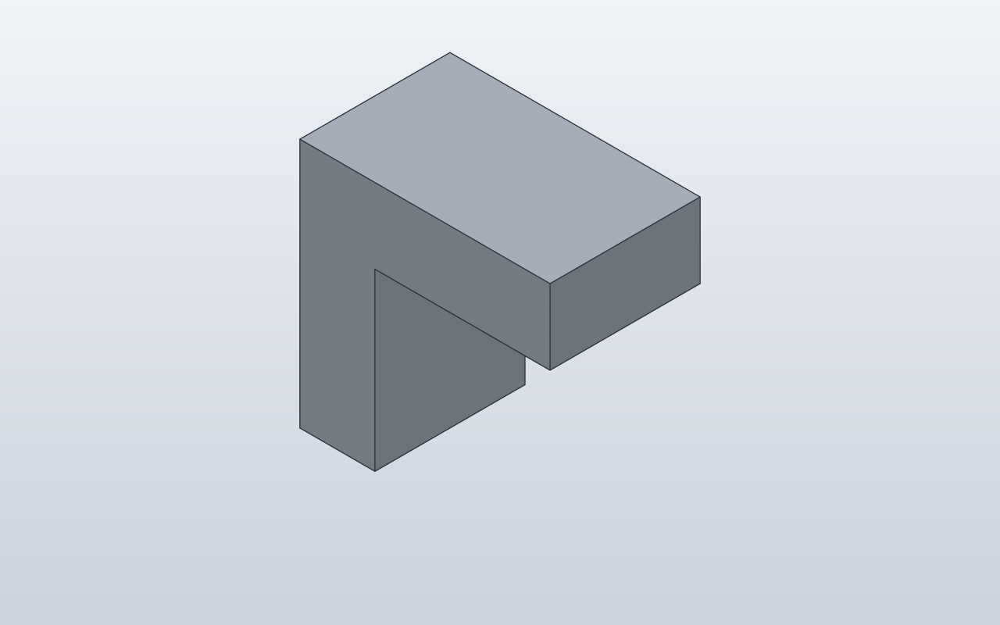

← Qualification / Minimal L-profile
Forge qualification case · Q1–Q6 native verified
Minimal L-profile
Provide a deliberately simple reusable L-shaped reference component for later attachment/orientation qualification.

1. Forge contract
Public API
Polygon2D(..., plane='XZ').extrude(width, direction=Direction.SYMMETRIC)
Internal Forge model
One symbolic L profile extruded symmetrically through its width; no holes, fillets, anchors or secondary features.
SolidCraft lowering
Native XZ sketch/polygon plus symmetric extrusion. No assembly commands are present yet.
2. Native verification
Expected result
A clean 40 mm L profile with 12 mm arms and 24 mm symmetric extrusion width.
Parametric mutation
Not yet an attachment mutation case. This component is intentionally the geometry baseline for upcoming multi-orientation anchor tests.
Evidence

Generated native relationship/command path
parameters.add
parameters.add
parameters.add
sketch.create
sketch.line
sketch.finish
solid.extrudeReference models
These comparisons clarify concepts; Forge does not promise API compatibility with them.
Fixture source
@dataclass
class Bracket:
"""Minimal L-profile qualification fixture.
Deliberately no holes, fillets or secondary features: this fixture exists
to verify profile geometry, XZ extrusion and later assembly relationships
without unrelated feature behavior obscuring the result.
"""
width: float = 24
arm_length: float = 40
arm_height: float = 12
def build(self):
profile = Polygon2D(
[
(0, 0),
(self.arm_length, 0),
(self.arm_length, self.arm_height),
(self.arm_height, self.arm_height),
(self.arm_height, self.arm_length),
(0, self.arm_length),
],
plane="XZ",
)
return profile.extrude(self.width, direction=Direction.SYMMETRIC)
Bracket()